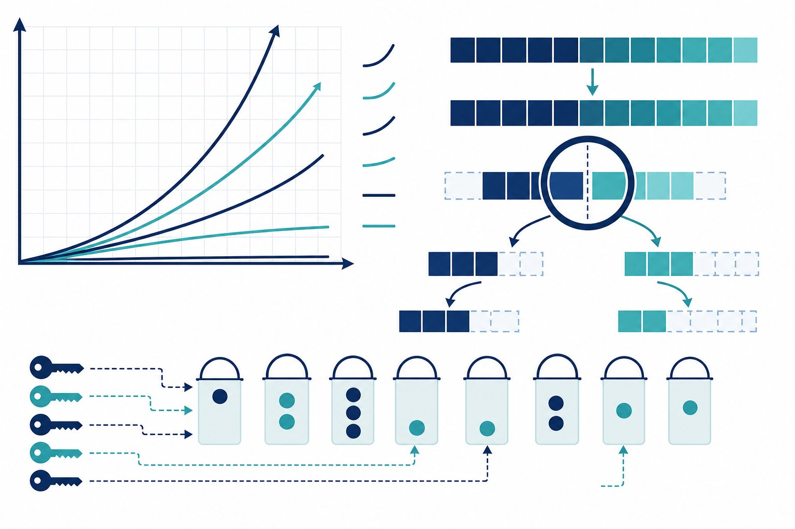

DSA I — Big-O, arrays, hashing
Every AI interview — and every slow pipeline — is secretly a data-structures question. Learn to read Big-O like a native, wield arrays, strings, and hash maps with Python code you can run today, and recognise the three patterns behind half of all coding rounds.

Figure 67.1 — n = 10⁶ turns O(n²) into a coffee break and O(n log n) into a blink. Complexity first, code second.
1. Big-O (the only math that matters in interviews)
| Complexity | Name | n = 10⁶ feels like | Typical source |
|---|---|---|---|
| O(1) | Constant | Instant | Hash lookup, index access |
| O(log n) | Logarithmic | ~20 steps | Binary search, bisect |
| O(n) | Linear | One pass, fine | Single loop, Counter |
| O(n log n) | Linearithmic | Sortable | sorted(), mergesort |
| O(n²) | Quadratic | 10¹² ops — dead | Nested loops over same data |
2. The big three patterns (with code)
Binary search — sorted input + “find the boundary” = O(log n). Python ships it as bisect; know the hand-rolled version for interviews:
def binary_search(a, x):
lo, hi = 0, len(a) - 1
while lo <= hi:
mid = (lo + hi) // 2
if a[mid] == x:
return mid
if a[mid] < x:
lo = mid + 1
else:
hi = mid - 1
return -1Two pointers — sorted array + pair/sum/window questions collapse from O(n²) to O(n):
def two_sum_sorted(a, target):
i, j = 0, len(a) - 1
while i < j:
s = a[i] + a[j]
if s == target:
return (i, j)
if s < target:
i += 1
else:
j -= 1
return NoneHash maps — trade memory for O(1) lookups. Counting, dedup, and “have I seen this?” are all dict/Counter:
from collections import Counter
def first_unique(s):
freq = Counter(s) # O(n) single pass
for i, ch in enumerate(s):
if freq[ch] == 1:
return i
return -13. Strings & arrays drill (interview reps)
- Sliding window: longest substring without repeats — expand right, shrink left, hash map of last-seen indices. O(n).
- Prefix sums: range-sum queries in O(1) after O(n) preprocessing — the backbone of feature-window code (Ch 45).
- In-place discipline: reverse, rotate, partition without extra arrays — interviewers score memory, not just time.
- Say it aloud: “brute force is O(n²); sorting + two pointers gives O(n log n); hash map gives O(n) time, O(n) space — I’ll take the hash map.” That sentence passes rounds.
Python gotchas
list.pop(0) and insert(0, x) are O(n) — use collections.deque for queues. String + in a loop is O(n²) — collect pieces and "".join(). in on a list is O(n) but O(1) on a set — convert first, then probe. Interviewers (and profilers) notice.
Short notes
Big-O ladder: 1 → log n → n → n log n → n² (dead at scale). Three patterns: binary search on sorted data (bisect), two pointers for pairs/windows, hash maps for counting/seen. Python: deque for queues, join for strings, set for membership. Always state complexity before coding.
Point notes
- Complexity out loud, first.
- Sorted + boundary = bisect.
- Pairs/windows = two pointers.
- Seen/count = hash map.
- deque, join, set.
MCQs
5 questions1. Binary search on 1,000,000 sorted items takes roughly:
2. list.pop(0) in a loop is dangerous because it is:
3. Two-sum on a SORTED array is best solved in:
4. Membership testing (x in c) is O(1) when c is a:
5. Building a long string in a loop should use:
Practice questions
P1. Your log-scan script takes 40 minutes on 2M rows with a nested loop. Diagnose and fix with complexity math.
Nested loop = O(n²) ≈ 4×10¹² ops — dead. Fix path: (1) if probing membership, build a set/dict once → O(n); (2) if matching pairs on sorted keys, sort + two pointers → O(n log n); (3) if range queries, prefix sums → O(n) preprocess + O(1) query. New bill: ~2M ops ≈ seconds. Always profile one shard first to confirm the hotspot.
P2. Implement sliding-window longest-substring-without-repeats. State complexity and walk through “abba”.
Keep left pointer + dict of char → last index; expand right; if s[right] seen inside window, jump left past it; track max length. O(n) time, O(min(n, alphabet)) space. “abba”: right=0..1 window “ab” len 2; right=2 ‘b’ seen → left=2, window “b”; right=3 ‘a’ — last ‘a’ at 0, outside window → window “ba” len 2. Answer 2. The jump (not step) is the classic bug.
P3. An interviewer asks for “all pairs summing to K” in an unsorted array. Give the 90-second spoken answer + code shape.
Say: “Brute force O(n²). Sort + two pointers is O(n log n) but loses indices and complicates dup pairs. One pass with a hash map of seen values is O(n) time, O(n) space — for each x, need K−x in seen. I’ll do the hash map.” Code: seen=set(); for x: if K−x in seen: emit; add x. Mention dup handling (count map) and follow-up: “if sorted + indices unneeded, two pointers saves the space.”